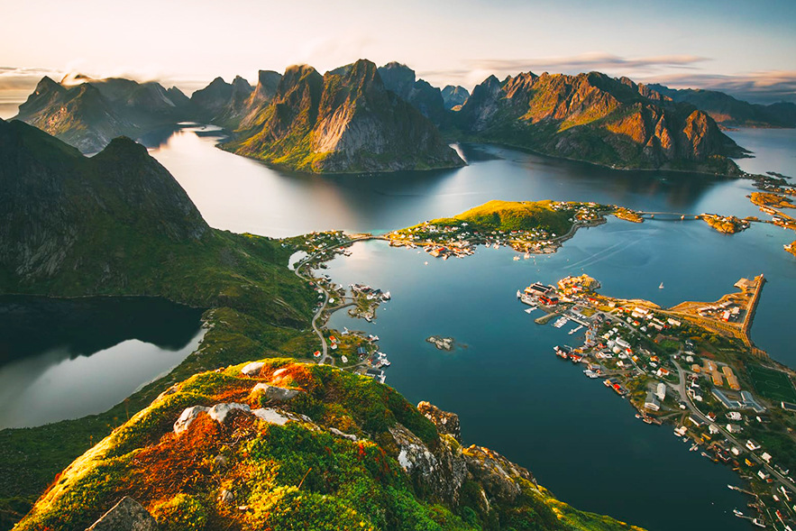
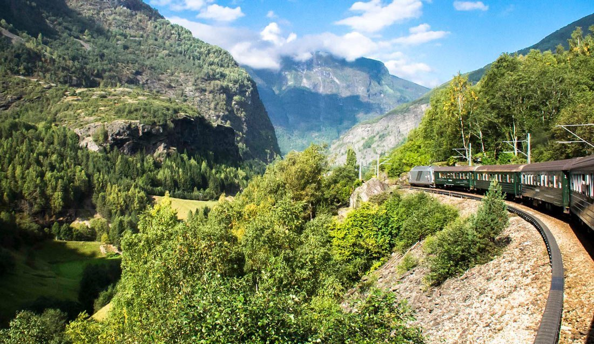
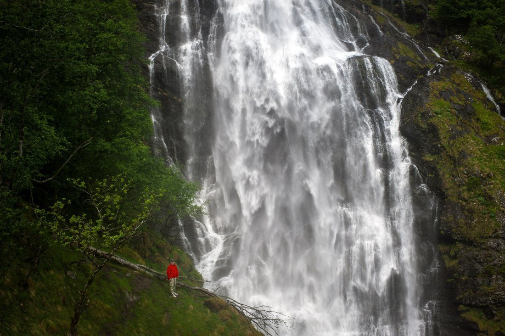
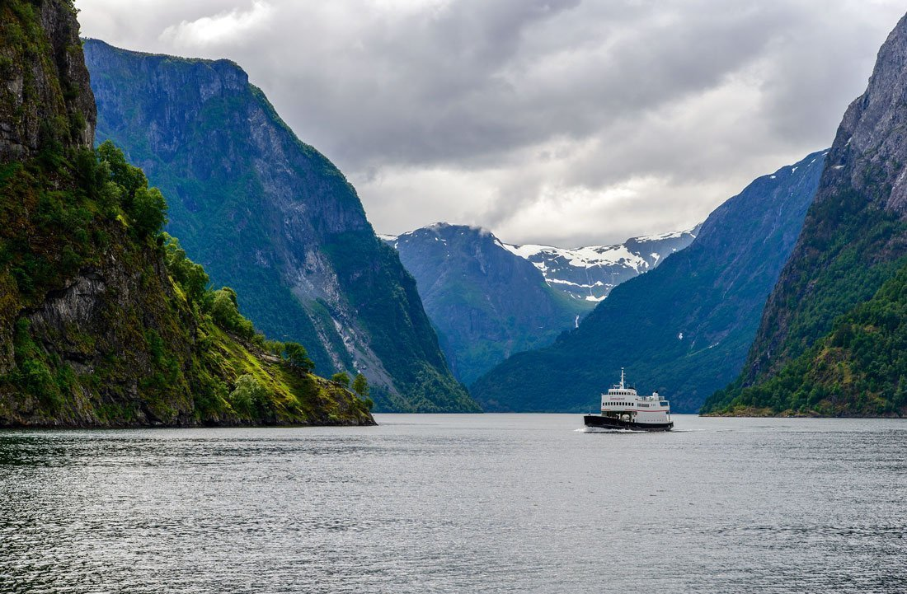
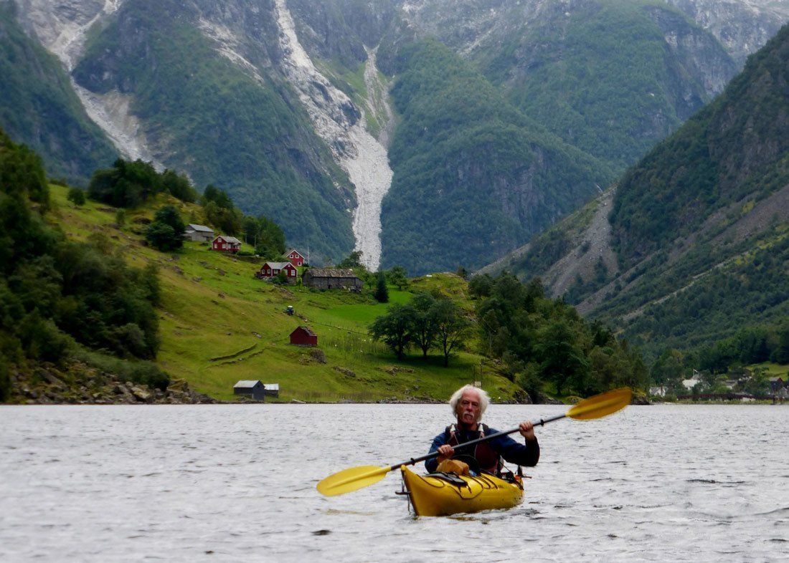

Почніть свою подорож з Фломській залізниці, прокладеної в 40-их роках від високогірної села Мірдал до Аурланд-фіорду через Фломська долину. З вікон старого поїзда ви побачите чепурні пейзажі з річками, водоспадами і крихітними селами. Поїзд робить зупинку біля водоспаду Кьосфоссен, під час зупинки можна вийти на платформу і підставити обличчя під вологі краплі, що наповнюють місцевий повітря. По прибуттю в Флом оселитеся, озирніться навколо, зайдіть в інфо-центр, перевірте розкладу, візьміть карти, знайдіть магазин і місцеву пекарню, купіть продуктів, якщо плануєте готувати самостійно. Після ланчу прогуляйтеся уздовж фіорду до старої фермі Оттернерс. Тут можна буде перекусити млинцями з кавою, влаштувавшись на одній з крамничок з видом на фьорд. Закінчити день можна гуляючи по парку Fretheimshaugane, з стежок якого відкриваються шикарні види на фьорд.

Рано вранці зайдіть в музей Фломській залізниці, перейдіть по мосту через річку, поверніть на дорогу в бік, протилежний фіорду і дотримуйтесь до покажчика до водоспаду Брекефоссен (Brekkefossen). Повернувшись з водоспаду на дорогу, продовжуйте шлях до маленького моста через річку і дотримуйтесь за вказівниками в напрямку Фломській церкви (Flåm Church). На цей трекінг піде години 4, плануйте день відповідно. Плануйте провести в села годину-дві, погуляйте в околицях, купите місцевого сиру і повертайтеся у Флом останнім поромом або останнім автобусом (перевірте всі розклади заздалегідь).

День на Нёроу-фіорді можна провести стандартно як все або більш авантюрно) На першому шатлі дістаньтеся до оглядового майданчика Стегестен, від парковки знайдіть покажчики на Bjørgåsen, підйом до в'ю-пойнту займе близько півгодини. Спустіться до Стегестену і поверніться в Аурланд на наступному шатлі (підлаштовувати подальший маршрут під розклад). Сідайте на круїзний корабель в напрямку Гудванген. По прибуттю проведіть пару годин в Селі вікінгков, погуляйте по околицях і повертайтеся автобусом у Флом. Більш авантюрна опція - при бронюванні квитків на Гудванген замовте зупинку на вимогу в селі Styvi, відвідайте найменшу в світі пошту і прямуйте уздовж фіорду по старій поштовій дорозі в напрямку села Bleiklindi. Відстань між селами - близько 6 кілометрів, на шляху будуть цікаві зупинки типу крихітних пляжів і водоспадів, трек займе не менше 2 - 3 годин. Щоб дістатися від Bleiklindi до Гудванген потрібно заздалегідь замовити човнове таксі або чекати на причалі проходить круїзного порома (на причалі є сигнальна функція, якої подається сигнал кораблям). Другий варіант знайомства з Нёроу-фьордом безсумнівно більш автентичний і цікавий, але вимагає більш ретельної підготовки. Перевірте і зістикуйте всі розклади, замовте всі квитки, трансфери і зупинки на вимогу заздалегідь в інфо-центрі Флома. Якщо ви плануєте від'їзд на цей день, поверніться з Стегестена шатлом у Флом, випишіть з готелю і сідайте на паром до Гудвагена. Відвідати село вікінгів у вас вже не буде можливості, так як залишити речі в Гудвагене ніде. Хіба що, якщо ви путешетвуете без нічого) у Флом можна купити коннект - квитки паром - автобус - поїзд до Бергена або Восс . В Осло можна повернутися на поїзді з Восс (квитки бронюйте заздалегідь)

Свій останній день на фьордах проведіть «на воді». Виберіть між каякінг-туром на півдня з Гудвагена (дивіться детальніше на сторінці Гудванген ) або фьорд-сафарі. Під Флом пропонуються різні формати фьорд-сафарі - півторагодинний по Аурланд-фіорду, двох-годинний - до Нёроу-фіорду, 5-годинний - з хайкінга і тп. Плануйте від'їзд на другу половину дня. В Осло можна повернутися поїздом через Восс (трохи більше години на автобусі до Восс) або автобусом, дивіться он-лайн квитки тут.
